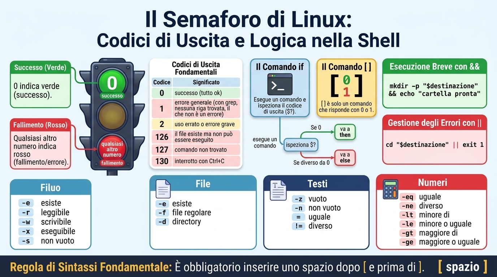
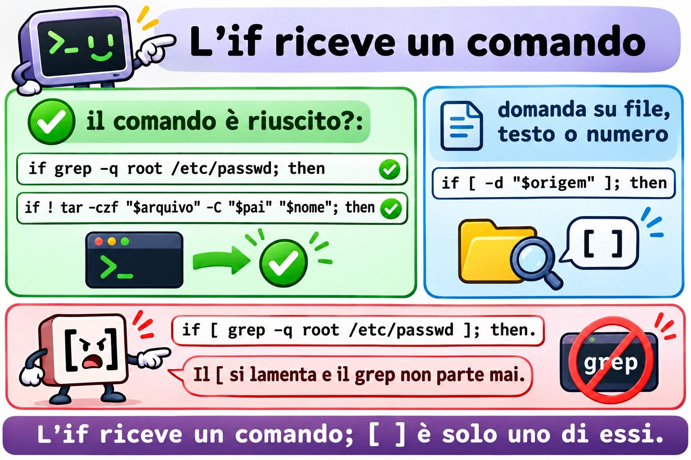
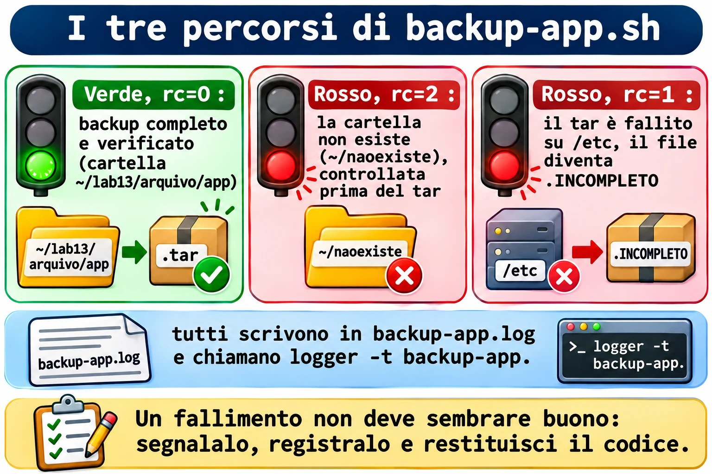
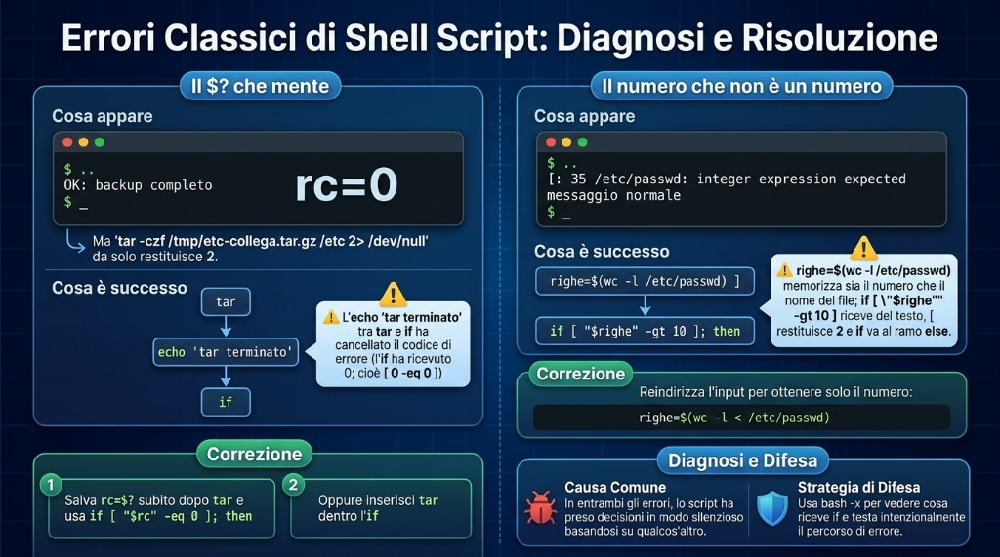

Lezione 1.9 · Decidere e ripetere
Nella Lezione 1.8, backup-app.sh ha detto OK per un backup di /etc rimasto senza i file più importanti. Oggi impara a diffidare: controlla il risultato di ogni passo, si ferma quando qualcosa va storto, lascia una traccia nel log e restituisce un codice che un altro script, o il cron, riesce a leggere. Poi fai lo stesso backup per un elenco di cartelle, con un ciclo, senza ripetere una riga.
| Scheda | Lezione 1.9 |
|---|---|
| Modulo | M1 · Riga di comando, lezione 9 di 10 |
| Quando | Settimana 3 |
| Alla fine sei in grado di | Leggere e usare il codice di uscita, $?; testare file, testi e numeri con test e [ ]; decidere con if, elif, else, && e ||; ripetere con for e while read; salvare l'output di un comando con $(...) e fare calcoli con $((...)); terminare uno script con exit N; scrivere nel log con logger |
| Prerequisiti | Lezione 1.8 completa, con ~/bin/backup-app.sh su entrambe le VM |
| Durata | Circa 2h30 |
| Snapshot | m1a9-inicio e m1a9-fim su entrambe le VM |
1 · Riscaldamento
Tre domande, a memoria, prima di leggere qualsiasi cosa. Scrivi le risposte; le Soluzioni le controllano alla fine.
- Nella Lezione 1.8, cosa fa
origem="${1:?uso: ...}"quando lo script viene chiamato senza argomenti? - Nella Lezione 1.8, perché
backup-app.sh /etc, lanciato come utente normale, si è concluso dicendo che il file era stato letto fino in fondo? - Scommessa: lanci
ls /naoexistee subito dopoecho $?. Che numero compare?
2 · Perché conta
Uno script di backup gira nel cron, ogni giorno alle 2, da otto mesi. Nessuno guarda l'output, perché "ha sempre funzionato". Il giorno in cui il disco del server muore, apri la cartella dei backup e trovi file da 45 byte a partire da marzo: tar falliva ogni notte, e lo script andava avanti e copiava il file vuoto sul NAS. Il comando aveva avvisato. Lo script non ha ascoltato.
Ogni comando Linux, quando termina, risponde con un numero: zero se è andato a buon fine, un altro numero se no. È l'informazione più importante che uno script ha, e quasi tutti gli script fatti male la ignorano. Oggi impari a leggere quel numero e a decidere in base a esso.
Secondo caso. Devi fare il backup di sei cartelle, o controllare dieci server, o rinominare trecento log. Copiare la stessa riga sei volte funziona, fino al giorno in cui ne correggi una e dimentichi le altre cinque. Un ciclo scrive la riga una volta sola e la ripete per ogni elemento.
E poi il lavoro vero chiede script che decidono e ripetono. Un compito tipico è "crea uno script che, per ogni utente di un elenco, faccia X; se l'argomento non viene passato, termini con codice 1". Chi chiama lo script, che sia tu, il cron o un altro script, controlla il codice di uscita.
3 · Modello mentale
Ogni comando, quando finisce, accende un semaforo. Zero è verde; qualsiasi altro numero è rosso, e il numero dice quale problema c'è stato.
Il semaforo non è ciò che il comando mostra a schermo. Un grep può non mostrare niente ed essere andato bene; un tar può mostrare un mucchio di righe ed essere fallito. La shell conserva il semaforo dell'ultimo comando in $? e lo sostituisce a ogni nuovo comando, compreso un echo.
Con il semaforo, tre strumenti:
ifdecide. Esegue un comando e guarda il semaforo. Verde, entra nelthen; rosso, va all'else. L'ifnon capisce testi né numeri: solo il semaforo.[ ]domanda. È un comando come tutti gli altri, il cui unico compito è rispondere con verde o rosso.[ -d /etc ]chiede "/etcè una cartella?" e risponde con il semaforo. Per questo compare così spesso dentro l'if, ma non è obbligatorio.forewhileripetono. Ilforripete una volta per ogni elemento di un elenco. Ilwhileripete finché un comando dà verde, comeread, che dà verde finché ci sono ancora righe da leggere.
if tar -czf ... ; then ... else ... fi
└── roda ───┘
│
└─ semáforo ($?) 0 ──► then
≠0 ──► else
[ -d "$origem" ] é só um comando que responde 0 (sim) ou 1 (não)

if, del [ ] e di &&/||.4 · Concetto a strati
Essenziale
Il codice di uscita.
ls /etc/hostname
echo $? # 0: è andato a buon fine
ls /naoexiste
echo $? # 2: è andato male; 2 è il codice di ls per "non ce l'ho fatto"| Codice | Significato più comune |
|---|---|
0 | È andato a buon fine |
1 | Fallimento generico. In grep, "non ho trovato nessuna riga", che non è un errore |
2 | Uso sbagliato o errore grave. In grep e tar, errore vero |
126 | Il file esiste, ma non può essere eseguito |
127 | Comando non trovato |
130 | Interrotto con Ctrl+C |
Anche il tuo script termina con un codice: quello dell'ultimo comando eseguito, oppure quello che scegli con exit N. Chi chiama il tuo script, che sia tu, un altro script o il cron, legge quel numero.
&& e ||. Il modo breve di decidere in una riga:
mkdir -p "$destino" && echo "pasta pronta" # esegue l'echo solo se mkdir è andato a buon fine
cd "$destino" || exit 1 # se cd è fallito, termina lo scripttest e [ ]. Sono lo stesso comando con due grafie. Dentro le parentesi quadre, spazio dopo [ e prima di ], sempre.
| Domanda | Verde quando |
|---|---|
[ -e "$x" ] | $x esiste, qualunque cosa sia |
[ -f "$x" ] | $x è un file normale |
[ -d "$x" ] | $x è una cartella |
[ -r "$x" ], -w, -x | Puoi leggere, scrivere, eseguire |
[ -s "$x" ] | $x esiste e non è vuoto |
[ -z "$v" ] | Il testo è vuoto |
[ -n "$v" ] | Il testo non è vuoto |
[ "$a" = "$b" ], != | Testi uguali, diversi |
[ "$n" -eq 5 ], -ne, -lt, -le, -gt, -ge | Numeri: uguale, diverso, minore, minore o uguale, maggiore, maggiore o uguale |
[ ! -d "$x" ] | Il ! inverte la domanda |
if.
if [ -d "$origem" ]; then
echo "pasta encontrada"
elif [ -e "$origem" ]; then
echo "existe, mas não é uma pasta"
else
echo "não existe"
fiL'if accetta qualsiasi comando, non solo [ ]:
if grep -q root /etc/passwd; then echo "tem root"; fi
if ! tar -czf "$arquivo" -C "$pai" "$nome"; then echo "o tar falhou"; fifor. Una volta per ogni elemento:
for servidor in rocky-lab debian-lab; do
echo "conferindo $servidor"
done
for arquivo in /var/log/*.log; do # la shell costruisce l'elenco, anche con spazi nei nomi
echo "$arquivo"
done
for i in {1..5}; do echo "$i"; done # da 1 a 5while read. Una volta per ogni riga di un file:
while read -r pasta; do
echo "vou guardar $pasta"
done < pastas.txtCon -r, read non tocca i backslash. Usalo sempre.
$(...) e $((...)).
hoje="$(date +%F)" # salva l'output di un comando
linhas="$(wc -l < /etc/passwd)" # con il <, wc mostra solo il numero
total=$((total + 1)) # calcola con numeri interiIl backtick, `date`, fa lo stesso di $(date). Lo troverai negli script vecchi; scrivi con $(...), che è più facile da leggere e da annidare.
exit N. Termina lo script all'istante, con il codice N. Mettiti d'accordo con chi lo leggerà: 0 per il successo e numeri diversi per errori diversi, documentati nel commento in cima.
logger. Scrive una riga nel log di sistema, con un'etichetta: logger -t backup-app "OK /etc". Per leggere: journalctl -t backup-app. È così che uno script del cron racconta cosa ha fatto, senza nessuno che guardi lo schermo.
Ponte Windows
| In Windows | In Linux | Attenzione |
|---|---|---|
%ERRORLEVEL% in cmd, $LASTEXITCODE in PowerShell | $? | In Linux, $? cambia dopo qualsiasi comando, anche un echo |
In PowerShell, $? è True o False | In bash, $? è un numero, e 0 è successo | È contro l'intuito: lo 0 è quello buono |
if exist arquivo | if [ -e "$arquivo" ] | Gli spazi dentro [ ] sono obbligatori |
In PowerShell, -eq e -gt confrontano qualsiasi cosa | In [ ], -eq e -gt valgono solo per i numeri; i testi usano = | [ 10 \> 9 ] confronta come testo e dà falso |
for %%f in (*.log) do | for f in *.log; do ...; done | |
exit /b 1 | exit 1 | |
Visualizzatore eventi, Write-EventLog | logger e journalctl |
Avanzato
[[ ]]è la versione di bash: accetta&&e||al suo interno, confronta i pattern con==e non si rompe con una variabile vuota senza virgolette. Non esiste indash, la/bin/shdi Debian. In questa lezione,[ ]con le virgolette, che funziona in qualsiasi shell.- Pipeline. Il
$?dicomando1 | comando2è quello dell'ultimo comando. Untar ... | gzipcontarche fallisce dà verde.set -o pipefailfa diventare rossa la pipeline se una qualsiasi parte fallisce;${PIPESTATUS[@]}mostra il codice di ogni parte. set -eferma lo script al primo comando che fallisce, ma non vale dentro unif, né prima di&&e||, né nelle pipeline senzapipefail. Aiuta, ma non sostituisce l'ifesplicito nei passi che contano.while readessh. Unsshdentro unwhile read ... done < listasi mangia il resto della lista, perché legge dallo stesso input. Usassh -n.casedecide tra più testi in una volta, comestart,stopestatus. Lo vedremo nel Modulo 4, negli script di servizio.tare i suoi codici. GNU tar esce con 1 quando un file è cambiato mentre veniva archiviato, e con 2 in caso di errore fatale, comePermission denied. Per l'if, entrambi sono rossi.
![Le domande del [ ]](../img/1.9-perguntas-do-colchete.it.jpg)
Le domande che il [ ] sa fare su file, testi e numeri.
5 · Rocky × Debian
| Rocky Linux 9 e 10 | Debian 13 | |
|---|---|---|
[[ ]] in uno script con #!/bin/sh | Funziona, perché /bin/sh è bash | [[: not found, perché /bin/sh è dash |
{1..5} in uno script con #!/bin/sh | Funziona | Mostra {1..5}, letterale |
Messaggio di [ "abc" -gt 1 ] | integer expression expected | integer expression expected. In bash 5.3, più recente, la frase si è accorciata in integer expected |
logger -t backup-app "msg" | Va nel journal; anche rsyslog lo copia in /var/log/messages | Va nel journal; senza rsyslog installato, /var/log/syslog non esiste |
Leggere ciò che ha scritto logger | journalctl -t backup-app | journalctl -t backup-app |
seq 1 5 | Installato | Installato |
La regola che vale su entrambe: #!/bin/bash in ogni script di questa lezione, [ ] con le virgolette, e journalctl -t per leggere il log.
6 · Lab guidato
Fai tutto su entrambe le VM, a meno che il passo non dica una sola. I test rapidi si fanno nel terminale; gli script stanno in ~/lab13/scripts; il backup-app.sh installato nella Lezione 1.8 è in ~/bin. In ogni passo, quando compare Prevedi, scrivi la risposta prima di premere Invio.
Passo 1 · Preparare
Sul nodo Proxmox:
qm snapshot 201 m1a9-inicio
qm snapshot 202 m1a9-inicioSu ogni VM:
type backup-app.sh
ls ~/lab13/arquivo/app
cd ~/lab13/scriptstype deve rispondere backup-app.sh is /home/SEU_USUARIO/bin/backup-app.sh. Se risponde not found, rifai il Passo 6 della Lezione 1.8.
Passo 2 · Il semaforo, $?
ls /etc/hostname
echo $?
ls /naoexiste
echo $?0 e poi 2. Il messaggio di errore di ls va a schermo; il codice va in $?.
Prevedi. Subito dopo ls /naoexiste, lanci echo $? due volte di fila. Cosa mostra ciascuno?
ls /naoexiste
echo $?
echo $?2 e poi 0. Il secondo echo mostra il codice del primo echo, che è andato a buon fine. $? viene cancellato a ogni comando. Tienilo a mente: è il Guasto A di questa lezione.
Ora grep, che ha tre risposte:
grep -q root /etc/passwd; echo "achou: $?"
grep -q naoexiste /etc/passwd; echo "não achou: $?"
grep -q root /arquivo/inexistente; echo "erro: $?"0, 1 e 2. Con -q, grep sta zitto: non mostra niente, risponde solo con il codice.
Decidi 1 · Cosa significa l'1. In uno script, grep -q "ERRO" app.log è terminato con codice 1. Cos'è successo?
- A)
grepè fallito: probabilmente il file non esiste. - B)
grepha funzionato e non ha trovato nessuna riga conERRO. - C)
grepha trovato esattamente una riga conERRO. - D)
grepè stato interrotto.
Scegli un'opzione prima di guardare la tabella.
| Se hai scelto | Risultato | Perché |
|---|---|---|
| A | ❌ Sbagliato | Un file inesistente dà 2, con il messaggio No such file or directory. |
| B | ✅ Giusto | Per grep, 1 significa "ho cercato e non ho trovato". In un monitoraggio dei log, è la buona notizia. |
| C | ❌ Sbagliato | Il codice non conta le righe. Trovarne una o mille dà 0. Per contare, grep -c. |
| D | ❌ Sbagliato | Interrotto con Ctrl+C dà 130. |
Da ricordare: rosso non vuol sempre dire errore. Leggi il man del comando, nella sezione EXIT STATUS, prima di decidere cosa significa ogni numero.
Verifica:
man grep | grep -A6 'EXIT STATUS'Passo 3 · Domandare con [ ]
[ -d /etc ]; echo "pasta: $?"
[ -f /etc ]; echo "arquivo: $?"
[ -f /etc/hostname ]; echo "arquivo: $?"
[ -z "" ]; echo "vazio: $?"
[ 10 -gt 9 ]; echo "maior: $?"0, 1, 0, 0, 0. Il [ è un comando vero:
type [
ls -l /usr/bin/[Essendo un comando, ha bisogno degli spazi, come qualsiasi altro. Guarda cosa succede senza:
[-d /etc]bash: [-d: command not found, codice 127. La shell ha cercato un programma chiamato [-d.
Prevedi. [ 10 \> 9 ] confronta 10 con 9 usando >. Verde o rosso?
[ 10 \> 9 ]; echo $?
[ 10 -gt 9 ]; echo $?1 e 0. Con >, i due lati vengono confrontati come testo, lettera per lettera, come nel dizionario: "1" viene prima di "9", quindi "10" è minore. I numeri si confrontano con -gt, -lt e compagnia.
Decidi 2 · La variabile vuota in [ ]. Lo script ha if [ $resposta = sim ]; then. Un giorno, resposta arriva vuota. Cosa succede?
- A) Il test dà falso, in silenzio, e lo script va all'
else. - B) Compare
[: =: unary operator expected, il test restituisce 2, e lo script va all'else. - C) Lo script si ferma subito con un errore di sintassi.
- D) Il test dà vero, perché vuoto è uguale a qualsiasi cosa.
Scegli un'opzione prima di guardare la tabella.
| Se hai scelto | Risultato | Perché |
|---|---|---|
| A | ❌ Sbagliato | Sarebbe così con le virgolette. Senza virgolette, la variabile vuota sparisce dalla riga. |
| B | ✅ Giusto | Senza virgolette, la shell costruisce [ = sim ]. Il [ vede solo due pezzi e protesta. Il codice 2 è rosso, quindi l'if va all'else e lo script prosegue, con uno strano messaggio a schermo. |
| C | ❌ Sbagliato | Non è un errore di sintassi di bash: è il [, un comando, che si lamenta degli argomenti. Lo script continua. |
| D | ❌ Sbagliato | Nessun comando tratta il vuoto come un jolly. |
Da ricordare: una variabile dentro [ ] sempre tra virgolette: [ "$resposta" = sim ]. È la regola della Lezione 1.8 con un motivo in più.
Verifica:
resposta=
[ $resposta = sim ]; echo $?
[ "$resposta" = sim ]; echo $?unary operator expected e 2, poi solo 1, pulito.
Passo 4 · Decidere con if
cat > existe.sh <<'EOF'
#!/bin/bash
# existe.sh - dice cos'è ogni percorso ricevuto
# Uso: existe.sh CAMINHO
alvo="${1:?uso: $0 CAMINHO}"
if [ -d "$alvo" ]; then
echo "$alvo é uma pasta"
elif [ -f "$alvo" ]; then
echo "$alvo é um arquivo de $(wc -c < "$alvo") bytes"
elif [ -e "$alvo" ]; then
echo "$alvo existe, mas não é pasta nem arquivo comum"
else
echo "$alvo não existe" >&2
exit 1
fi
EOF
chmod +x existe.sh
./existe.sh /etc; echo "rc=$?"
./existe.sh /etc/hostname; echo "rc=$?"
./existe.sh /dev/null; echo "rc=$?"
./existe.sh /naoexiste; echo "rc=$?"Cartella, file, "esiste, ma non è", e não existe con rc=1. Il >&2 manda il messaggio di errore sullo standard error, la Lezione 1.5: chi redirige solo l'output normale vede comunque l'errore.
Decidi 3 · Quale if è giusto? Vuoi sapere se l'utente root compare in /etc/passwd.
- A)
if [ grep -q root /etc/passwd ]; then - B)
if grep -q root /etc/passwd; then - C)
if [ $(grep root /etc/passwd) ]; then - D)
if grep -q root /etc/passwd = 0; then
Scegli un'opzione prima di guardare la tabella.
| Se hai scelto | Risultato | Perché |
|---|---|---|
| A | ❌ Sbagliato | Il [ riceve le parole grep, -q, root e /etc/passwd come testo e non sa che farsene: protesta con un errore di sintassi, la cui frase cambia a seconda della versione di bash, e restituisce 2. grep non gira mai, e l'if va all'else. |
| B | ✅ Giusto | L'if esegue grep e guarda il semaforo. È la forma più breve e la più corretta. |
| C | ❌ Sbagliato | Funziona per caso finché l'output è una parola sola: la riga di root non ha spazi. Se grep trova due righe, o una con uno spazio, il [ riceve troppi pezzi e protesta. Usa l'output, quando quello che conta è il codice. |
| D | ❌ Sbagliato | grep riceve = e 0 come nomi di file. Con -q, si ferma al primo riscontro e non arriva nemmeno ad aprire quei due, quindi sembra funzionare. Il giorno in cui non trova niente, si lamenta che = e 0 non esistono e restituisce 2. Giusto per caso è sbagliato. |
Da ricordare: l'if riceve un comando. Usa [ ] solo quando la domanda riguarda file, testi o numeri; quando la domanda è "questo comando è andato bene?", metti direttamente il comando.
Verifica la A, per vedere il messaggio:
if [ grep -q root /etc/passwd ]; then echo sim; else echo não; fi
if grep -q root /etc/passwd; then echo sim; else echo não; fiE il modo breve, con && e ||:
grep -q root /etc/passwd && echo "tem root" || echo "sem root"

if esegue un comando e guarda il semaforo; il [ ] è solo uno dei comandi possibili.Passo 5 · Ripetere con for
for vm in rocky-lab debian-lab; do
echo "vou conferir $vm"
done
for i in {1..3}; do echo "volta $i"; done
for i in $(seq 1 3); do echo "volta $i"; doneOra, una cartella con nomi di log, uno dei quali con uno spazio, come succede quando il file arriva da Windows:
mkdir -p ~/lab13/logs-teste
cd ~/lab13/logs-teste
touch app.log "nota fiscal.log" erro.log
ls -lDecidi 4 · Scorrere i log. Quale ciclo passa per i tre file, uno alla volta, con il nome intero?
- A)
for f in $(ls); do echo "[$f]"; done - B)
for f in *.log; do echo "[$f]"; done - C)
for f in "$(ls)"; do echo "[$f]"; done - D)
for f in $(ls *.log); do echo "[$f]"; done
Scegli un'opzione prima di guardare la tabella.
| Se hai scelto | Risultato | Perché |
|---|---|---|
| A | ❌ Sbagliato | L'output di ls viene spezzato sugli spazi: compaiono [nota] e [fiscal.log], separati. Quattro giri, due sbagliati. |
| B | ✅ Giusto | È la shell stessa che costruisce l'elenco con il *, e ogni nome diventa un elemento intero, con spazio o senza. Tre giri. |
| C | ❌ Sbagliato | Le virgolette mettono tutto in un elemento solo: un giro, con i tre nomi e gli a capo dentro. |
| D | ❌ Sbagliato | Lo stesso problema della A. Il *.log aiuta ls, ma la divisione sugli spazi avviene dopo. |
Da ricordare: per scorrere dei file, usa il * direttamente nel for. Mai for f in $(ls).
Verifica:
for f in $(ls); do echo "[$f]"; done
for f in *.log; do echo "[$f]"; doneE un ciclo utile, che conta le righe di ogni log:
for f in *.log; do
echo "$(wc -l < "$f") linhas $f"
done
cd ~/lab13/scriptsPasso 6 · Ripetere con while read e contare
Un elenco di cartelle, una per riga, con una riga vuota e una cartella che non esiste, apposta:
cat > pastas.txt <<'EOF'
/home/SEU_USUARIO/lab13/arquivo/app
/home/SEU_USUARIO/lab13/logs-teste
/home/SEU_USUARIO/naoexiste
EOF
sed -i "s|SEU_USUARIO|$USER|" pastas.txt
cat -A pastas.txtcat -A mostra la riga vuota come un $ da solo. Ora leggi riga per riga, saltando quella vuota:
total=0
while read -r pasta; do
[ -z "$pasta" ] && continue
total=$((total + 1))
if [ -d "$pasta" ]; then
echo "OK $pasta"
else
echo "FALTA $pasta"
fi
done < pastas.txt
echo "Total: $total"Due righe OK, una FALTA, Total: 3. Il continue salta al giro successivo.
Decidi 5 · Il totale che sparisce. Un collega ha scritto lo stesso ciclo così: cat pastas.txt | while read -r pasta; do ... done, e poi echo "Total: $total". Cosa compare alla fine?
- A)
Total: 3, uguale. - B)
Total: 0. - C)
Total: 4, perché ora la riga vuota conta. - D) Errore: il
whilenon accetta la pipe.
Scegli un'opzione prima di guardare la tabella.
| Se hai scelto | Risultato | Perché |
|---|---|---|
| A | ❌ Sbagliato | Dentro il ciclo, il conto arriva a 3. Ma avviene da un'altra parte. |
| B | ✅ Giusto | In una pipe, bash esegue il while in una shell figlia. Il total che arriva a 3 è quello del figlio, e muore con lui. L'echo fuori vede il total di prima del ciclo: 0. È lo stesso motivo del cd che non resta, della Lezione 1.8. |
| C | ❌ Sbagliato | Il [ -z ] con continue salta la riga vuota in entrambi i modi. |
| D | ❌ Sbagliato | Il while accetta la pipe senza lamentarsi. Per questo l'errore è subdolo: non c'è nessun messaggio. |
Da ricordare: in un ciclo che accumula qualcosa per dopo, leggi il file con done < arquivo, mai con cat arquivo |.
Verifica:
total=0
cat pastas.txt | while read -r pasta; do [ -z "$pasta" ] && continue; total=$((total + 1)); done
echo "Total pelo pipe: $total"
total=0
while read -r pasta; do [ -z "$pasta" ] && continue; total=$((total + 1)); done < pastas.txt
echo "Total pelo <: $total"Passo 7 · backup-app.sh impara a diffidare
È la riparazione promessa nella Decidi 4 della Lezione 1.8. La versione nuova controlla ogni passo, restituisce un codice diverso per ogni tipo di problema, registra tutto in un log suo e nel journal, e non lascia che un backup incompleto abbia l'aria di uno buono.
cp ~/bin/backup-app.sh ~/bin/backup-app.sh.v3
cat > ~/bin/backup-app.sh <<'EOF'
#!/bin/bash
# backup-app.sh - backup di una cartella con il Protocollo della Lezione 1.7
# Uso: backup-app.sh PASTA [DESTINO]
# PASTA cosa salvare, obbligatorio
# DESTINO dove salvare, predefinito ~/backups
# Uscita: 0 = backup completo e verificato
# 1 = il backup è fallito o è rimasto incompleto
# 2 = la cartella non esiste
origem="${1:?uso: $0 PASTA [DESTINO]}"
destino="${2:-$HOME/backups}"
nome="$(basename "$origem")"
pai="$(dirname "$origem")"
data="$(date +%F_%H%M)"
arquivo="$destino/$nome-$data.tar.gz"
log="$destino/backup-app.log"
mkdir -p "$destino" || exit 1
if [ ! -d "$origem" ]; then
echo "ERRO: $origem não é uma pasta" >&2
echo "$(date '+%F %T') ERRO pasta $origem" >> "$log"
logger -t backup-app "ERRO pasta $origem"
exit 2
fi
echo "Backup de $origem para $arquivo"
if ! tar -czf "$arquivo" -C "$pai" "$nome"; then
echo "ERRO: o tar falhou; o backup de $origem está incompleto" >&2
mv "$arquivo" "$arquivo.INCOMPLETO" 2> /dev/null
echo "$(date '+%F %T') ERRO tar $origem" >> "$log"
logger -t backup-app "ERRO tar $origem"
exit 1
fi
if ! tar -tzf "$arquivo" > /dev/null; then
echo "ERRO: $arquivo não abre até o fim" >&2
echo "$(date '+%F %T') ERRO teste $arquivo" >> "$log"
logger -t backup-app "ERRO teste $arquivo"
exit 1
fi
sha256sum "$arquivo" > "$arquivo.sha256"
chmod 600 "$arquivo" "$arquivo.sha256"
echo "$(date '+%F %T') OK $origem $arquivo" >> "$log"
logger -t backup-app "OK $origem $arquivo"
ls -lh "$arquivo" "$arquivo.sha256"
EOF
bash -n ~/bin/backup-app.sh && echo "sintaxe ok"Leggi lo script dall'alto in basso prima di lanciarlo. Nota tre scelte:
- Il test sulla cartella viene prima di qualsiasi
tar. Prima l'errore che costa poco. tarsta dentro l'if. Non c'è nessun$?che possa essere cancellato lungo la strada.- Un backup fallito non viene cancellato: viene rinominato in
.INCOMPLETO. Nessuno lo scambia per uno buono, e puoi comunque guardare cosa c'è dentro.
Ora i tre percorsi, controllando il codice di ciascuno:
backup-app.sh ~/lab13/arquivo/app /tmp/bkp9; echo "rc=$?"
backup-app.sh ~/naoexiste /tmp/bkp9; echo "rc=$?"
backup-app.sh /etc /tmp/bkp9 2> /tmp/bkp9-erros.txt; echo "rc=$?"Prevedi. Prima di lanciare la terza riga: quale rc, e quali file nuovi compaiono in /tmp/bkp9?
ls -l /tmp/bkp9
tail -3 /tmp/bkp9-erros.txt
cat /tmp/bkp9/backup-app.logrc=0, rc=2 e rc=1. Per /etc, tar si è lamentato dei file che l'utente normale non legge, è terminato con l'avviso Exiting with failure status due to previous errors, e lo script ha rinominato il file in etc-...tar.gz.INCOMPLETO. Il log ha una riga OK, una ERRO pasta e una ERRO tar. Nella Lezione 1.8, questo stesso comando diceva OK.
La stessa registrazione è nel journal di sistema, dove la cercano il cron e il monitoraggio:
journalctl -t backup-app --since todayCon sudo, /etc entra per intero:
sudo ~/bin/backup-app.sh /etc /tmp/bkp9; echo "rc=$?"rc=0.
Il ciclo sopra. Ora lo script che fa il backup di un intero elenco, chiamando backup-app.sh per ogni riga e contando il risultato:
cat > ~/bin/backup-lista.sh <<'EOF'
#!/bin/bash
# backup-lista.sh - esegue backup-app.sh per ogni cartella di un elenco
# Uso: backup-lista.sh LISTA [DESTINO]
# LISTA file con una cartella per riga
# DESTINO passato a backup-app.sh
lista="${1:?uso: $0 LISTA [DESTINO]}"
destino="${2:-$HOME/backups}"
ok=0
falhas=0
while read -r pasta; do
[ -z "$pasta" ] && continue
if backup-app.sh "$pasta" "$destino"; then
ok=$((ok + 1))
else
falhas=$((falhas + 1))
fi
done < "$lista"
echo "Resumo: $ok OK, $falhas com erro"
[ "$falhas" -eq 0 ]
EOF
chmod +x ~/bin/backup-lista.sh
backup-lista.sh ~/lab13/scripts/pastas.txt /tmp/bkp9; echo "rc=$?"Resumo: 2 OK, 1 com erro e rc=1. L'ultima riga dello script è un test: diventa il codice di uscita. Zero fallimenti, verde; qualsiasi fallimento, rosso. Il cron, o chi lo chiama, sa che qualcosa è andato storto senza leggere l'output.
Fai lo stesso sull'altra VM e confronta i log.
Protocollo · Script che avvisa quando fallisce
- Nel commento in cima, documenta i codici di uscita:
# Saída: 0 = ..., 1 = ..., 2 = ....- Controlla ciò che costa poco prima di ciò che costa molto: argomenti e cartelle prima del
tar.- Metti il comando che conta dentro l'
if:if ! tar ...; then. Se ti serve il numero, salvalo nella riga successiva:rc=$?.- Messaggio di errore su
>&2, e una riga nel log con data,ERROe il motivo. Usalogger -t nomeper arrivare al journal.- Un risultato fallito non deve sembrare buono: rinominalo, marcalo o spostalo.
- Termina con
exit Nin ogni uscita di errore; nel finale felice, decide l'ultimo comando.- Testa i tre percorsi, successo, errore in ingresso ed errore a metà, controllando l'
echo $?di ciascuno.


backup-app.sh ha tre percorsi, ciascuno con il proprio codice di uscita e la propria registrazione.7 · Rompi e ripara
Guasto A · Il $? che mente
Un collega ha scritto un backup di /etc "con verifica". Fai come lui, da utente normale, senza sudo:
cd ~/lab13/scripts
cat > confere.sh <<'EOF'
#!/bin/bash
# confere.sh - backup di /etc con verifica (versione del collega)
tar -czf /tmp/etc-colega.tar.gz /etc 2> /dev/null
echo "tar terminou"
if [ $? -eq 0 ]; then
echo "OK: backup completo"
else
echo "ERRO: backup com problema"
fi
EOF
chmod +x confere.shSintomo.
./confere.sh; echo "rc=$?"tar terminou, OK: backup completo e rc=0. Ma sai, dalla Lezione 1.8, che un utente normale non legge tutto /etc.
Indagine. Lancia con i raggi X e controlla tar da solo:
bash -x ./confere.sh
tar -czf /tmp/etc-colega.tar.gz /etc 2> /dev/null; echo "tar sozinho: $?"tar da solo dà 2. In bash -x, la riga + '[' 0 -eq 0 ']' mostra che l'if ha ricevuto 0. Quello 0 è dell'echo "tar terminou", che è capitato tra tar e if, è andato a buon fine e ha cancellato il codice di tar.
Decidi A · La riparazione. Cosa risolve?
- A) Sostituire
-eqcon=:if [ $? = 0 ]. - B) Togliere il
2> /dev/null, per vedere gli errori. - C) Mettere
tardentro l'if,if tar -czf ...; then, oppure salvare il codice subito dopo,rc=$?, e testare"$rc". - D) Sostituire l'
echocon unprintf.
Scegli un'opzione prima di guardare la tabella.
| Se hai scelto | Risultato | Perché |
|---|---|---|
| A | ❌ Sbagliato | Confronta come testo invece che come numero, ma $? resta quello dell'echo: 0. |
| B | ❌ Sbagliato | Gli errori compaiono a schermo, il che aiuta chi sta guardando. Nel cron nessuno guarda, e lo script continua a dire OK. |
| C | ✅ Giusto | Con tar dentro l'if, non c'è nessun $? che possa essere cancellato. Se ti serve il numero, per registrarlo o per decidere tra 1 e 2, salvalo in rc nella riga immediatamente successiva. |
| D | ❌ Sbagliato | Anche printf va a buon fine e cancella il codice allo stesso modo. Qualsiasi comando nel mezzo fa lo stesso. |
Da ricordare: $? vale solo fino al comando successivo. Testa il comando direttamente nell'if, oppure salva rc=$? nella riga seguente, senza niente in mezzo.
Riparazione.
cat > confere.sh <<'EOF'
#!/bin/bash
# confere.sh - backup di /etc con verifica (riparato)
tar -czf /tmp/etc-colega.tar.gz /etc 2> /dev/null
rc=$?
echo "tar terminou com código $rc"
if [ "$rc" -eq 0 ]; then
echo "OK: backup completo"
else
echo "ERRO: backup com problema" >&2
exit 1
fi
EOF
./confere.sh; echo "rc=$?"
sudo ./confere.sh; echo "rc=$?"Da utente: tar terminou com código 2, ERRO e rc=1. Con sudo: codice 0, OK e rc=0.
Guasto B · Il numero che non è un numero
Uno script di allarme conta gli account utente e avvisa se superano 10:
cat > contas.sh <<'EOF'
#!/bin/bash
# contas.sh - avvisa se ci sono troppi account nel sistema
linhas=$(wc -l /etc/passwd)
if [ "$linhas" -gt 10 ]; then
echo "ALERTA: $linhas contas"
else
echo "normal: $linhas contas"
fi
EOF
chmod +x contas.shSintomo.
./contas.sh; echo "rc=$?"Qualcosa come [: 35 /etc/passwd: integer expression expected, seguito da normal: 35 /etc/passwd contas, e rc=0. Sì, normal: il [ si è lamentato, ha restituito 2, e l'if è andato all'else. Su un server con 500 account, il messaggio sarebbe lo stesso. In bash 5.3, più recente di quello delle VM, la frase è integer expected.
Indagine. Guarda cosa ha salvato la variabile:
linhas=$(wc -l /etc/passwd)
echo "[$linhas]"
wc -l < /etc/passwd[35 /etc/passwd]. Quando riceve il nome del file, wc mostra il numero e il nome. -gt accetta solo numeri interi. Con <, wc legge dall'input, non conosce il nome del file e mostra solo il numero.
Decidi B · La riparazione. Cosa risolve?
- A) Sostituire
-gtcon>:[ "$linhas" \> 10 ]. - B) Togliere le virgolette:
[ $linhas -gt 10 ]. - C)
linhas=$(wc -l < /etc/passwd). - D) Usare
[[ ]]al posto di[ ].
Scegli un'opzione prima di guardare la tabella.
| Se hai scelto | Risultato | Perché |
|---|---|---|
| A | ❌ Sbagliato | Il messaggio sparisce, ma il confronto diventa di testo: "35 /etc/passwd" contro "10", lettera per lettera. Un sistema con 9 account darebbe l'allarme, perché "9" viene dopo "1". |
| B | ❌ Sbagliato | Senza virgolette, il [ riceve quattro pezzi, 35, /etc/passwd, -gt e 10, e si lamenta in un altro modo: too many arguments. Il problema è il contenuto, non le virgolette. |
| C | ✅ Giusto | La variabile riceve solo 35, e -gt funziona. È lo stesso < del Passo 4 e del for dei log. |
| D | ❌ Sbagliato | Anche [[ ]] esige un numero con -gt e dà un errore simile. |
Da ricordare: prima di confrontare dei numeri, guarda la variabile con echo "[$var]". Le parentesi quadre mostrano spazi e pezzi in più che non ti aspettavi.
Riparazione.
sed -i 's|wc -l /etc/passwd|wc -l < /etc/passwd|' contas.sh
cat contas.sh
./contas.sh; echo "rc=$?"ALERTA: 35 contas, oppure normal, se la tua VM ne ha 10 o meno. Nessun messaggio strano.
La morale
I due errori di oggi hanno la stessa faccia: lo script sembra aver deciso, ma ha deciso su qualcos'altro. Nel Guasto A, su un $? che era già di un altro comando. Nel Guasto B, su un test che non è nemmeno arrivato a confrontare e ha restituito 2, che l'if tratta come un "no". In entrambi i casi, lo script è terminato con rc=0 e un messaggio rassicurante. La difesa è la stessa: bash -x per vedere cosa ha ricevuto davvero l'if, e provare apposta il percorso di errore, come nel Passo 7, prima di fidarti del percorso felice.


8 · Trappole
| Cosa digiti o vedi | Cosa succede | Come evitarla |
|---|---|---|
[-d /etc] | [-d: command not found | [ -d /etc ], con gli spazi |
if [ $var = sim ] con var vuota | unary operator expected e l'if va all'else | [ "$var" = sim ] |
[ "$n" > 5 ] | Non confronta niente: crea un file chiamato 5, perché > è una redirezione | [ "$n" -gt 5 ] |
[ 10 \> 9 ] | Falso: confronta come testo | -gt, -lt per i numeri |
[ "$a" -eq "$b" ] con dei testi | integer expression expected | = per i testi |
comando; echo "..."; if [ $? -eq 0 ] | Testa il codice dell'echo | if comando; then, oppure rc=$? subito dopo |
if [ grep -q x arq ] | Il [ protesta; grep non gira mai | if grep -q x arq; then |
grep con codice 1 trattato come errore | Falso allarme ogni volta che è tutto pulito | 1 è "non trovato"; 2 è errore |
for f in $(ls) | I nomi con spazio diventano due elementi | for f in * |
cat arq | while read ... e poi usare la variabile | La variabile torna al valore di prima del ciclo | while read ...; done < arq |
read senza -r | I backslash spariscono dal testo letto | read -r |
x=$(wc -l arquivo) | Salva numero e nome | x=$(wc -l < arquivo) |
total=total+1 | Salva il testo total+1 | total=$((total + 1)) |
Script senza exit nell'errore | Il cron riceve 0, anche con un fallimento | exit 1 in ogni percorso di errore |
tar ... | gzip e controllare $? | Vale il codice di gzip | set -o pipefail, oppure tar -czf diretto |
ssh servidor cmd dentro un while read | Il ciclo si ferma dopo il primo server | ssh -n servidor cmd |
9 · Quiz
Dieci domande, senza consultare niente. Scrivi la lettera o la risposta di ognuna e solo dopo apri le Soluzioni.
1. Lanci ls /naoexiste, poi echo $?, e di nuovo echo $?. Cosa mostra il secondo echo?
- A)
2 - B)
0 - C)
1 - D)
127
2. Quale riga testa correttamente se /backup è una cartella?
- A)
[ -f /backup ] - B)
[-d /backup] - C)
[ -d /backup ] - D)
[ -e /backup ]
3. La variabile n vale 7. Quale test risponde verde se n è maggiore di 5, senza effetti collaterali?
- A)
[ "$n" > 5 ] - B)
[ "$n" -gt 5 ] - C)
[ "$n" \> 5 ] - D)
[ n -gt 5 ]
4. grep -q ERRO app.log è terminato con codice 1. Cos'è successo?
- A) Il file non esiste.
- B) C'è esattamente una riga con
ERRO. - C)
grepha funzionato e non ha trovatoERRO. - D)
grepnon ha il permesso di leggere il file.
5. In una cartella con i file a b.log e c.log, quanti giri fa for f in *.log; do echo "$f"; done? E for f in $(ls *.log); do echo "$f"; done?
- A) 2 e 2
- B) 3 e 3
- C) 2 e 3
- D) 3 e 2
6. Con n=0 e un file lista di tre righe, cosa mostra cat lista | while read -r l; do n=$((n + 1)); done; echo "$n"?
- A)
3 - B)
0 - C) Vuoto
- D) Errore di sintassi
7. Spiega, in una frase, cosa fa cd "$destino" || exit 1 dentro uno script.
8. Il tuo script ha rilevato che il backup è fallito. Quale riga fa sapere al cron, o a un altro script, che è andata male senza leggere l'output? E come verifichi, nel terminale, che ha funzionato?
9. linhas=$(wc -l /etc/passwd) seguito da [ "$linhas" -gt 10 ] dà integer expression expected. Perché, e come si ripara?
10. A shell script contains the line if [ -f "$1" ]; then. When is this condition true?
- A) When
$1is a directory - B) When
$1exists and is a regular file - C) When
$1is not empty - D) When
$1is an executable file - E) When
$1is a file that is not empty
10 · Flashcard e promemoria
Da sapere a memoria
Questa parte è da tenere in testa. È ciò che trasforma un elenco di comandi in uno script che decide.
$?: il codice dell'ultimo comando.0è successo; qualsiasi altro numero è fallimento$?cambia dopo qualsiasi comando, anche unecho. Salvalo conrc=$?nella riga successivaif comando; then ...; elif ...; else ...; fi. L'ifguarda il codice, non l'output[ -d "$x" ]cartella,[ -f "$x" ]file,[ -e "$x" ]esiste,[ -z "$v" ]vuoto,[ ! ... ]inverte- Spazio dopo
[e prima di]; variabile sempre tra virgolette - Testi:
=e!=. Numeri:-eq -ne -lt -le -gt -ge comando && se_deu_certo;comando || se_falhoufor f in *.log; do ...; done, maifor f in $(ls)while read -r linha; do ...; done < arquivo, maicat arquivo | whilex="$(comando)"salva l'output;n=$((n + 1))fa i contiexit Ntermina con il codiceN
Da consultare
Questa parte non devi impararla a memoria. Ricorda dove si trova.
grep: 0 trovato, 1 non trovato, 2 errore.tar: 0 ok, 1 file cambiato durante il backup, 2 errore fatale126senza permesso di esecuzione;127comando non trovato;130Ctrl+Cman COMANDO, sezione EXIT STATUS, per i codici di ciascuno[ -r ],[ -w ],[ -x ]permessi;[ -s ]esiste e non è vuoto{1..5}o$(seq 1 5)per contare;continuesalta il giro;breakesce dal ciclowc -l < arquivomostra solo il numerologger -t etiqueta "mensagem"scrive nel journal;journalctl -t etiquetalegge[[ ]]solo in bash; su Debian,#!/bin/shèdash, senza[[set -o pipefaile${PIPESTATUS[@]}per i codici di una pipelineset -esi ferma al primo errore, ma non dentroif,&&e||ssh -ndentro unwhile read
Flashcard
| Fronte | Retro |
|---|---|
| Quale codice indica successo? | 0. Qualsiasi altro numero è fallimento |
| Dov'è il codice dell'ultimo comando? | In $? |
Perché echo $? due volte di fila dà numeri diversi? | Il secondo mostra il codice del primo echo |
Cosa guarda l'if? | Il codice di uscita del comando, non ciò che mostra |
Cos'è il [? | Un comando, come tutti gli altri, che risponde 0 o 1 |
Perché [-d /etc] dà command not found? | Senza spazio, la shell cerca un programma chiamato [-d |
[ $v = sim ] con v vuota: cosa succede? | unary operator expected, codice 2, e l'if va all'else |
-eq o =? | -eq per i numeri, = per i testi |
Cosa fa [ "$n" > 5 ]? | Crea un file chiamato 5. Il > è una redirezione |
grep -q ha dato 1. È un errore? | No. Significa "non ho trovato" |
| Come scorrere file con spazi nel nome? | for f in * |
Perché cat arq | while perde il contatore? | Il ciclo gira in una shell figlia, che muore alla fine della pipe |
| Come salvare solo il numero di righe? | n=$(wc -l < arquivo) |
| Come fa il cron a sapere che lo script è fallito? | Dal codice di uscita: exit 1 |
Dove leggere ciò che uno script ha scritto con logger -t x? | journalctl -t x |
11 · Checklist di uscita
Spunta solo ciò che sai fare senza guardare la lezione:
- [ ] Spiegare cos'è il codice di uscita e verificarlo con
echo $? - [ ] Dire cosa significano 0, 1 e 2 in
grepetar - [ ] Testare se qualcosa è una cartella, un file o esiste, con
[ ]e le virgolette - [ ] Confrontare testi con
=e numeri con-gt, sapendo perché non scambiarli - [ ] Scrivere un
ifconelifeelse, e un altro con un comando diretto, senza[ ] - [ ] Scorrere file con
for, anche con spazi nel nome - [ ] Leggere un file riga per riga con
while read -r, contando, senza perdere il totale - [ ] Salvare l'output di un comando e fare calcoli con
$((...)) - [ ] Terminare uno script con codici diversi per errori diversi
- [ ] Scrivere nel journal con
loggere leggere conjournalctl -t
Ultimo esercizio, senza guardare. Chiudi questa lezione. In ~/lab13/scripts, crea conta-linhas.sh:
- Riceve uno o più file come argomenti. Senza nessuno, mostra
uso: conta-linhas.sh ARQUIVO...e termina con 1. - Per ogni argomento che è un file, mostra
N linhas NOME, con il numero da solo. - Per ogni argomento che non è un file, mostra
AVISO: NOME não existe, sullo standard error, e conta il fallimento. - Funziona con nomi che contengono spazi.
- Termina con 0 se esistono tutti, e con 1 se ne mancava qualcuno.
Prova con ./conta-linhas.sh /etc/passwd /etc/hostname /naoexiste; echo $?. Le risposte sono alla fine delle Soluzioni.
Snapshot di chiusura. Sul nodo Proxmox:
qm snapshot 201 m1a9-fim
qm snapshot 202 m1a9-fimNon cancellare ~/bin/backup-app.sh né ~/lab13: la Lezione 1.10 è la sfida del modulo, e ti servirà tutto ciò che il Modulo 1 ha costruito.
12 · Nella vita reale
Missione della settimana, sola lettura. Scegli un server che amministri davvero. Se è di un cliente, fai solo ciò che il contratto permette; se hai dubbi, usa rocky-lab e debian-lab. Nessun comando di questa missione cambia qualcosa: ti limiti a domandare e a leggere il codice di uscita.
Il semaforo dei servizi e della rete:
systemctl is-active sshd; echo "ssh: $?"
systemctl is-active ssh; echo "ssh no Debian: $?"
ip route | grep default
ping -c1 -W1 IP_DO_GATEWAY > /dev/null; echo "gateway: $?"Sostituisci IP_DO_GATEWAY con l'indirizzo che ip route ha mostrato. systemctl is-active risponde active e codice 0, oppure altro e codice diverso da 0: è così che gli script di monitoraggio chiedono se un servizio è in piedi.
Ora, gli script di casa che hai trovato nella missione della Lezione 1.8. Controllano qualcosa?
grep -n -E '\$\?|if |exit ' /usr/local/bin/* 2> /dev/null | head -30
grep -L -E '\$\?|if |exit ' /usr/local/bin/* 2> /dev/nullIl primo mostra dove gli script decidono. Il secondo, con -L, elenca quelli che non hanno né $?, né if, né exit: script che fanno tutto in sequenza e non chiedono mai se è andata bene.
Su Proxmox, verifica se il backup dell'ultima notte è avvenuto, contando i file nuovi:
find /var/lib/vz/dump -newermt "$(date -d yesterday +%F)" -name '*.zst' | wc -l
grep -l 'ERROR' /var/log/vzdump/*.log 2> /dev/null | tail -5Se il tuo storage di backup non è /var/lib/vz/dump, sostituiscilo con il suo percorso. Confronta il numero con la quantità di VM che avrebbero dovuto essere salvate.
Per il diario. Rispondi in poche righe:
- Quali codici hanno restituito
systemctl is-activeeping? Qualcuno diverso da 0? - Quanti script di casa non controllano mai niente? Qualcuno di loro gira dal cron?
- Lo script di backup più importante sa dire che è fallito? Con
exit, con un log, con una e-mail? - Il backup di ieri su Proxmox ha generato il numero atteso di file?
- Quale riparazione della sezione 6 proporresti per prima, e a chi? Annotala, e non toccare niente: la produzione è sola lettura.
Sfida della settimana. Su rocky-lab, scrivi checa-servidor.sh, in sola lettura:
- Riceve un limite come argomento opzionale, predefinito 80.
- Per ogni file system di
df --output=pcent,target -x tmpfs -x devtmpfs, mostraokoALERTAcon l'uso e il punto di montaggio. Suggerimento:tail -n +2toglie l'intestazione, etr -d '%'toglie il%. - Mostra
Alertas: Nalla fine e termina con 1 se ce n'è qualcuno. - Attenzione alla Decidi 5: se leggi
dftramite una pipe, il contatore sparisce. Salva l'output in un file in/tmpe leggi condone <.
Prova con limite 1, per vedere gli alert, e con 99. Quando funziona su entrambe le VM, lancialo una volta sul server vero, solo per leggere. Nel diario, una riga al giorno con il risultato.
Domani, senza guardare. Apri un terminale domani e, senza consultare niente:
- Lancia un comando che va a buon fine e uno che fallisce, e mostra il codice di ciascuno.
- Scrivi un
ifche dice se/etc/hostnameè un file. - Scrivi un
forche mostra la dimensione di ogni.confin/etc, conwc -c <. - Leggi
/etc/passwdconwhile read -re conta le righe che terminano conbash. - Spiega a voce alta perché l'
echotratareifrovina la verifica.
Se ti blocchi su qualcuno, torna solo al Passo di quel punto.
13 · Con DeepTutor
Usa il DeepTutor della tua rete locale dopo il lab, non al posto del lab. I comandi iniziano con !:
!quiz Aula 1.9: chiedi dieci domande nuove su$?,[ ],ife cicli, nel formato delle Decidi.!explica $?: chiedi tre esempi in cui il codice di uscita inganna, comegrepcon 1 e l'echonel mezzo.!feynman: spiega a un tirocinante perchécat arquivo | while readperde il contatore. DeepTutor indica dove sei rimasto vago.!quebra: chiedi un nuovo script rotto, come un[ $v -eq 1 ]convvuota, unfor f in $(ls)o unif [ comando ], e ripara usando solobash -xeecho "[$var]".!quiz 1.9 script: chiedi tre compiti pratici del tipo "crea uno script che, per ogni utente di un elenco, faccia X e termini con 1 se ne manca qualcuno", ciascuno con il comando che conferma il risultato.!cartoes: genera flashcard dalla sezione 10 e ripassa tra tre giorni.!erro: incolla un messaggio vero, comeinteger expression expectedounary operator expected, e chiedi la causa prima della soluzione.!revisao: pianifica il ripasso della Lezione 1.9 tra tre giorni e tra una settimana.
Soluzioni commentate
Riscaldamento
- Si ferma subito, mostrando il messaggio dopo il
?, e termina con un codice diverso da zero. Nessuna riga successiva viene eseguita. Oggi hai visto lo stesso effetto conifeexit 2, solo con più controllo. - Perché lo script controllava solo se il file si apriva, non se
tarera andato a buon fine.tarha saltato ciò che non riusciva a leggere, è terminato con codice 2, e nessuno ha guardato quel codice. Il file incompleto si apriva perfettamente. La versione del Passo 7 mettetardentro l'ife rinomina il file in.INCOMPLETO. 2.lsusa 2 per "non sono riuscito ad accedere". Non è 1, come molti tirano a indovinare: ogni comando ha la sua tabella, nella sezione EXIT STATUS delman.
Quiz
- B. Il secondo
echomostra il codice del primoecho, che è andato a buon fine. Il2dilsè sopravvissuto solo fino al primo. - C. A testa un file normale, B non ha spazi e diventa
command not found, D dice solo che esiste, qualunque cosa sia. - B. A crea un file chiamato
5e risponde verde perché"7"non è vuoto. C confronta come testo e ci azzecca per caso: conn=10, darebbe falso. D confronta la letteran, non la variabile, e si lamenta coninteger expression expected. - C. Per
grep, 1 significa "non trovato". File inesistente o senza permesso dà 2, e trovare una o mille righe dà 0. - C. Il
*.logconsegna due nomi interi.$(ls *.log)viene spezzato dopo sugli spazi:a,b.logec.log. - B. Il
whilegira in una shell figlia, a causa della pipe. L'nche arriva a 3 muore con lei, e l'echovede l'ndi fuori, che è ancora 0. - Prova a entrare nella cartella; se non ci riesce, termina lo script con codice 1. Senza questo, lo script continuerebbe nella cartella sbagliata, e un
taro unrmsuccessivo agirebbe sul posto sbagliato. exit 1, o un altro numero diverso da zero, documentato in cima. Nel terminale: lancia lo script e, subito dopo,echo $?.- Perché
wcmostra il numero e il nome del file, e la variabile resta con35 /etc/passwd, che non è un numero. Ripara conlinhas=$(wc -l < /etc/passwd). Per vedere il problema,echo "[$linhas]". - B. Guarda ogni alternativa:
| Se hai scelto | Risultato | Perché |
|---|---|---|
| A | ❌ Sbagliato | Una cartella è -d. -f risponde 1 per una cartella. |
| B | ✅ Giusto | -f è vero quando il percorso esiste ed è un file normale. |
| C | ❌ Sbagliato | Il testo non vuoto è -n "$1". |
| D | ❌ Sbagliato | Eseguibile è -x. |
| E | ❌ Sbagliato | File non vuoto è -s. Un file vuoto passa -f. |
Ultimo esercizio
Una risposta possibile:
cat > conta-linhas.sh <<'EOF'
#!/bin/bash
# conta-linhas.sh - mostra quante righe ha ogni file
# Uso: conta-linhas.sh ARQUIVO...
# Uscita: 0 = esistono tutti; 1 = ne mancava qualcuno
if [ "$#" -eq 0 ]; then
echo "uso: conta-linhas.sh ARQUIVO..." >&2
exit 1
fi
faltou=0
for arq in "$@"; do
if [ -f "$arq" ]; then
echo "$(wc -l < "$arq") linhas $arq"
else
echo "AVISO: $arq não existe" >&2
faltou=$((faltou + 1))
fi
done
[ "$faltou" -eq 0 ]
EOF
chmod +x conta-linhas.sh
./conta-linhas.sh; echo "rc=$?"
./conta-linhas.sh /etc/passwd /etc/hostname /naoexiste; echo "rc=$?"
./conta-linhas.sh /etc/passwd /etc/hostname; echo "rc=$?"$#conta gli argomenti; con zero, lo script si ferma con 1 prima di tutto.wc -l <mostra solo il numero, senza il nome.>&2manda l'avviso sullo standard error, e il contatore registra il fallimento."$@", con le virgolette, consegna ogni argomento intero alfor.- L'ultima riga è un test: zero fallimenti dà 0; qualsiasi fallimento dà 1. È lo stesso trucco di
backup-lista.sh.